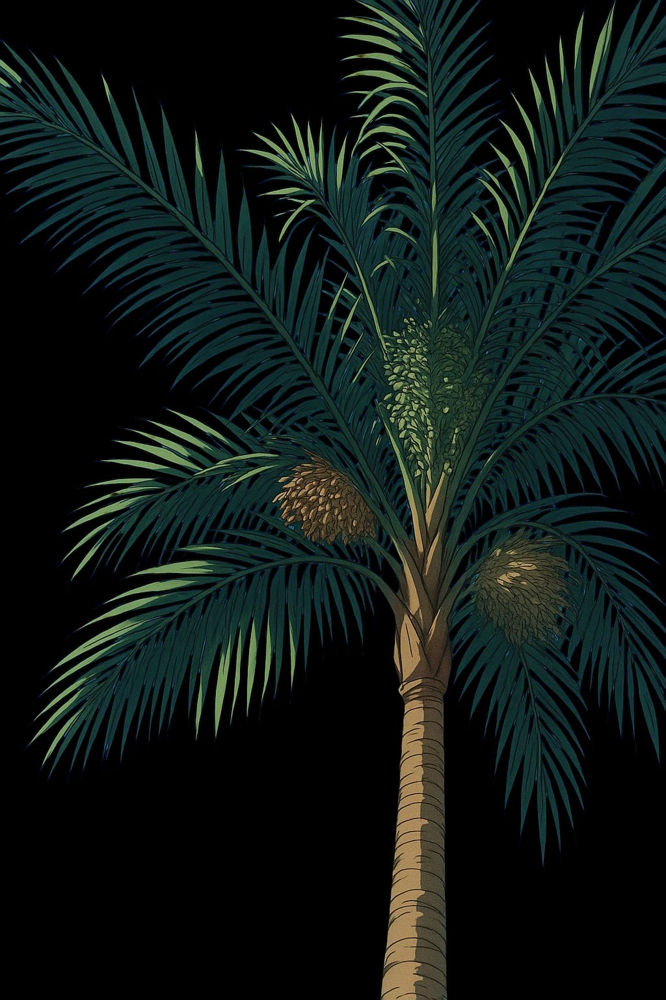
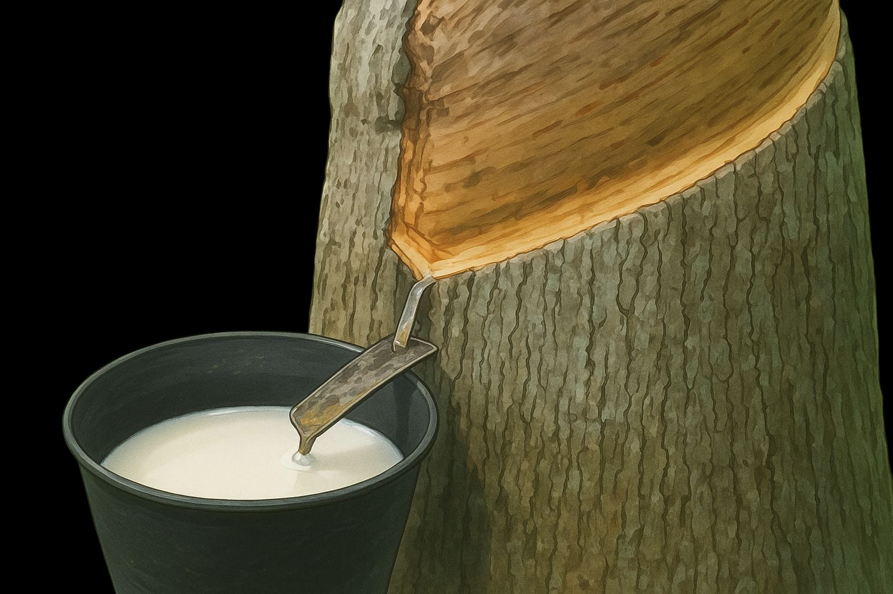
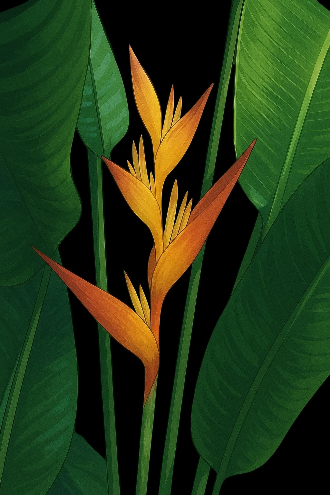
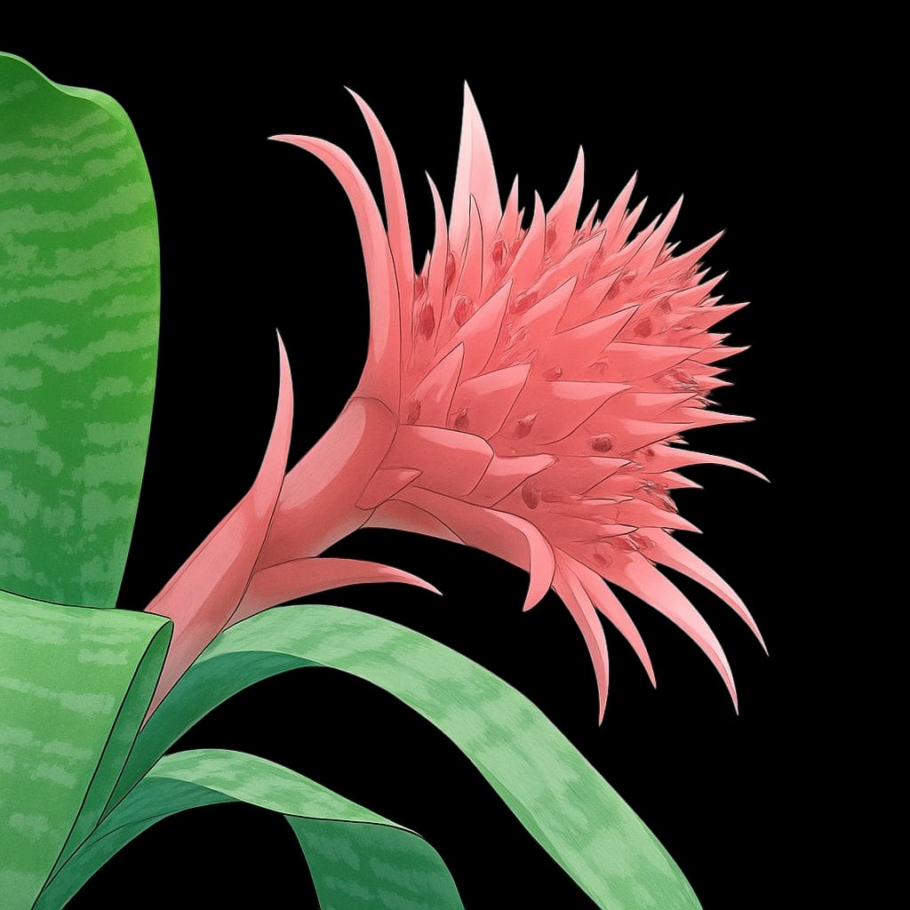
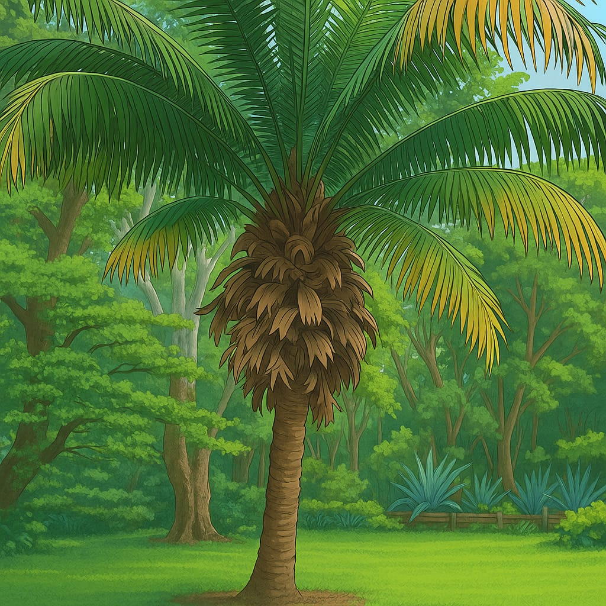

Palma de chambira (Astrocaryum chambira)
- Hábitat: Bosques tropicales bajos, áreas húmedas.
- Sus hojas se usan para hacer artesanías como hamacas y sombreros.
- Fuente de fibras naturales.

Árbol de caucho (Hevea brasiliensis)
- Hábitat: Bosques lluviosos primarios.
- De su savia se extrae el látex para fabricar goma.
- Fundamental en la economía de la región en el pasado.

Heliconia (Heliconia spp.)
- Hábitat: Selvas tropicales húmedas.
- Plantas con flores coloridas, parecidas a plumas o picos.
- Polinizadas por colibríes.

Bromelias (Bromeliaceae)
- Hábitat: Troncos de árboles, suelos húmedos.
- Plantas epífitas que capturan agua de lluvia.
- Albergan pequeños ecosistemas (ranas, insectos).

Palmera de Tagua (Phytelephas aequatorialis)
- Hábitat: Selvas húmedas y zonas inundables.
- De sus semillas se obtiene la "marfil vegetal" usado en botones y artesanías.
- Alternativa sostenible para reemplazar el marfil animal.